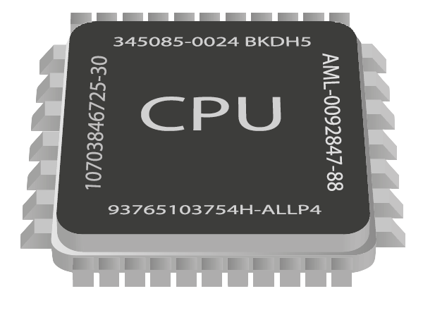

|
|
| FORM PEMBELIAN KOMPUTER DISINI!! |
Dual-core CPU
|
Dual-core CPU adalah jenis prosesor yang memiliki dua inti pemrosesan atau core dalam satu chip tunggal. Setiap inti ini berfungsi sebagai unit pemrosesan independen yang dapat mengeksekusi instruksi atau menjalankan tugas secara simultan, meningkatkan kemampuan multitasking secara signifikan dibandingkan dengan CPU single-core. Dual-core memungkinkan komputer untuk menangani lebih dari satu proses secara bersamaan, yang membuatnya lebih efisien dan cepat ketika menjalankan beberapa aplikasi sekaligus atau melakukan tugas-tugas yang memerlukan daya komputasi lebih besar. Dengan dua inti yang bekerja secara paralel, dual-core CPU juga mampu menjalankan tugas-tugas yang lebih berat dengan performa lebih stabil dan responsif. Dalam berbagai skenario, seperti menjalankan aplikasi kantor, pemutaran multimedia, atau gaming ringan, dual-core CPU dapat memberikan performa yang cukup baik tanpa menghabiskan banyak daya seperti prosesor multi-core yang lebih canggih. Meskipun saat ini sudah banyak CPU dengan lebih dari dua inti, dual-core masih cukup populer dan ekonomis untuk kebutuhan komputasi dasar yang memerlukan efisiensi dalam kinerja dan daya. |
 |